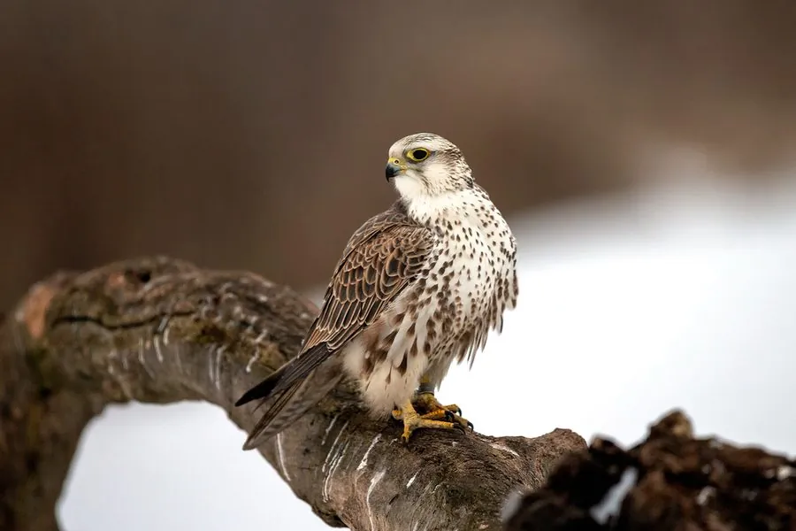

鸟类 · 动物界
猎隼 Falco cherrug

体型壮硕的草原隼类，上体棕褐、下体乳白带斑，飞行迅猛。历史上是驯鹰文化中的名贵猎禽，如今因盗猎和栖息地退化而濒危。
- 分类
- 门脊索动物门纲鸟纲目隼形目科隼科属隼属
- 栖息环境
- 草原、半荒漠、高山草甸、河谷与农田边缘，营巢多选崖壁、土崖或高大树木。
- 地理分布
- 繁殖于东欧、中亚、蒙古高原至中国西北及青藏高原；部分种群冬季南迁至南亚、中东。
- 保护级别
- IUCN 红色名录列为濒危（EN）；中国国家一级保护野生动物，列入 CITES 附录一。
物种志
猎隼体长约四十五至五十八厘米，翼展一百至一百三十厘米，体重七百至一千三百克，雌鸟大于雄鸟。上体棕褐色，羽缘较浅，头顶与后颈具细密纵纹；下体乳白至淡黄，胸腹部有褐色点斑或纵纹。头侧有明显的黑色“髭纹”，眼下无完整深色斑块。虹膜暗褐，嘴端钩曲，脚黄色，爪黑色。
它栖息于草原、半荒漠、高山草甸与河谷，常在崖壁、土坎或树上停栖，依靠高速俯冲捕食黄鼠、鼠兔、沙鼠及石鸡等鸟类。繁殖期占用崖壁凹处或旧巢，每窝产卵三至五枚。猎隼分布自东欧经中亚至蒙古高原与中国西北，中国新疆、青海、甘肃、内蒙古及西藏均有记录。由于非法捕捉用于驯鹰和贸易，全球种群持续下降，被列为濒危物种并受到严格保护。
形态与习性
- 体长45–58 厘米，雌鸟较大
- 翼展100–130 厘米
- 体重700–1300 克
- 食性黄鼠、鼠兔、沙鼠及中小型鸟类
- 繁殖崖壁或旧巢产卵，每窝 3–5 枚
- 保护级别国家一级；IUCN 濒危；CITES 附录一
趣味知识
- 俯冲速度极快，常在低空贴地追击黄鼠。
- 驯鹰传统中与游隼并称，但因盗猎面临巨大压力。
- 雌鸟比雄鸟大近三分之一，可捕食更大的猎物。